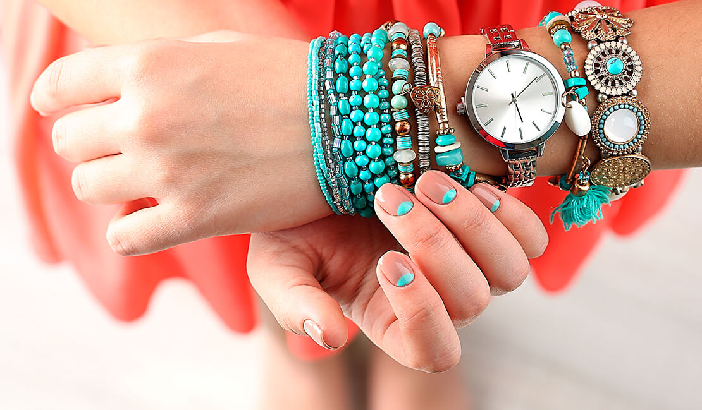

Blog
ESTILO DE VIDA


BIENESTAR

TENDENCIAS
Estilo de vida
Recomendaciones para tu tarjeta de presentación
Las tarjetas de presentación son una herramienta que proyecta tu imagen profesional, es por eso que debes utilizarlas correctamente y brindar los datos necesarios.
Aplicaciones para gestionar tiempos dentro y fuera de la oficina
Si necesitas administrar tus tiempos y tenerlo todo al alcance de tu mano, entonces, Wunderlist es una app que no debe faltar en tu smartphone.
Consejos para el cuidado de tus accesorios
Los accesorios requieren de cuidados especiales para mantener su textura y brillo en óptimas condiciones, y así luzcan como la primera vez que los usaste.
Tips para elegir el labial perfecto
Existe una gran cantidad de tonos de labiales, sin embargo hay tonos que favorecen más según el color de la piel. Sin embargo no sólo debes considerar el color principal de tu piel, sino también los subtonos de la misma.
Vacaciones sin salir de la ciudad
Estas son algunas actividades que puedes realizar en tus vacaciones con tus amigos, familia e incluso tu mismo, sin salir de la ciudad.

Lo básico que debe llevar tu bolsa de playa
¡Antes de salir a playa cerciórate que tu bolsa lleva lo necesario! Son elementos vitales incluso para salir cualquier día cotidiano.
Cuidados especiales para tu mascota
Tu mascota también es un miembro de la familia, pero recuerda que hay cuidados básicos para la convivencia diaria, sobre todo si viven dentro de casa.

¿Qué leen las personas que están cambiando el mundo?
Las personas más exitosas y millonarias del mundo tiene algo en común, la pasión por la lectura. Bill Gates, fundador de Microsoft comentó en una entrevista con el New York Times que en promedio lee 50 libros al año.

Productividad al 100%
La productividad se define como el número de recursos utilizados para obtener una producción. En el caso de los trabajadores se traduce con el tiempo y la energía empleada en una tarea.
Bienestar
Redecora tu casa con estos consejos
Despídete de la rutina y redecora tu espacio favorito. Transforma una habitación con estos consejos que tenemos para ti.

Cuida tu alimentación con estos hábitos
Una buena nutrición, acompañada de ejercicio y dieta balanceada, es la base para una buena salud. De lo contrario se altera el desarrollo físico y mental, y el sistema inmunológico se debilita, por lo que hay más probabilidades de enfermedades. Conoce estas recomendaciones para mejorar tus hábitos alimenticios.
Cuidados básicos de tu piel y el sol
El sol es nuestra fuente más importante de vida, sin embargo la exposición prolongada a los rayos ultravioleta es sumamente dañino para nuestra piel, causante de quemaduras, envejecimiento prematuro, manchas e incluso cáncer de piel. Pero sigue estos cuidados básicos para tener una piel saludable.
Tendencias
Decora tu habitación como sala de cine
Si eres amante del cine vale la pena adaptar en tu casa o departamento tu propio cine casero.
Armoniza tu habitación con estos consejos
Tu recámara es la habitación donde descansas, por lo tanto debe ser un espacio agradable, relajante y cómodo. Sigue estos consejos para que tu espacio sea más relajante.

Aprovecha lo más viejo de tu closet
La ropa no dura para siempre al igual que tus prendas favoritas, pero sino te quieres deshacer de ellas puedes utilizar alguno de estos consejos para volver a utilizarlas.
Hidrátate sin complicaciones
Cómo sabes el cuerpo humano está formado en gran parte por agua. Las necesidades de agua varían dependiendo de cada persona, sin embargo es muy importante mantenerse siempre bien hidratado para un bienestar físico y mental.
Combina tu look formal con tenis
El límite es tu creatividad, y recuerda que lo más importante es usar lo que te haga sentir más cómoda, así defines tu estilo. Un gran dicho dice que la moda, lo que te acomoda...
Consejos para tu outfit en una entrevista de trabajo
Elegir que vestir puede parecer trivial, sin embargo cuando se trata de una entrevista de trabajo la forma en la que vistes es la primera impresión de tus futuros empleadores.

Recomendaciones para contraseñas más seguras
En internet cada vez somos más propensos a fraudes cibernéticos como clonación de tarjetas bancarias o robo de identidad, por lo tanto es de suma importancia que las contraseñas de tus cuentas sean extremadamente seguras.